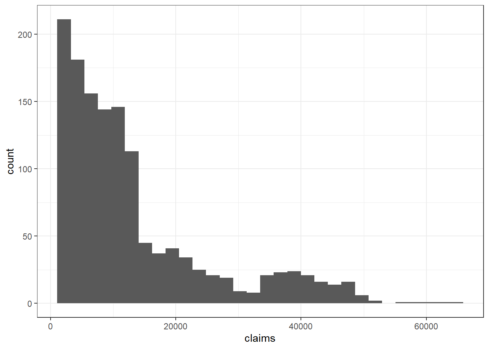

16 Bank Loans Case Study
library(tidyverse)
library(scales)
library(rpart)
library(rpart.plot)
library(ranger)
library(MASS)
library(xgboost)
library(glmnet)
library(pROC)
library(caret)
theme_set(theme_minimal())
knitr::opts_chunk$set(warning = FALSE, message = FALSE)
#df <- read_csv('simulated_bank_data_2012_2026.csv')
reticulate::use_python("C:/Users/casti/AppData/Local/Programs/Python/Python313/python.exe", required = TRUE)
# 3. Restart R session inside RStudio
Sys.setenv(RETICULATE_UV_ENABLED = "0")
#.rs.restartR()
library(reticulate)
datasets <- import("datasets")
# Load the dataset
ds <- datasets$load_dataset("supersam7/simulated_bank_data_2012_2026")
df_pd <- ds["train"]$to_pandas() # or ds$train$to_pandas()
df <- as_tibble(df_pd)
head(df)## # A tibble: 6 × 22
## age job marital education default housing loan contact month day_of_week
## <dbl> <chr> <chr> <chr> <chr> <chr> <chr> <chr> <chr> <chr>
## 1 34 manag… married basic.4y no no no teleph… may mon
## 2 45 servi… married basic.9y unknown no no cellul… jul mon
## 3 38 retir… divorc… high.sch… no yes no cellul… jun fri
## 4 52 blue-… married universi… unknown yes no teleph… jul fri
## 5 44 servi… married universi… unknown no no cellul… may tue
## 6 35 admin. married universi… unknown no yes cellul… sep fri
## # ℹ 12 more variables: duration <dbl>, campaign <dbl>, pdays <dbl>,
## # previous <dbl>, poutcome <chr>, emp.var.rate <dbl>, cons.price.idx <dbl>,
## # cons.conf.idx <dbl>, euribor3m <dbl>, nr.employed <dbl>, y <chr>,
## # year <dbl>16.1 Task 1 - Examine the Target Variable
The following can be used
# Remove column
df$varname <- NULL
# I convert character VARIABLE to a factor.
df$admit_type_id <- as.factor(df$admit_type_id)
# Exclude certain values
df <- subset(df, VARIABLE != "VALUE") # Replace VARIABLE and VALUE
# Value is in quotation marks for factor variables. No quotation marks for numeric variables.Combine variable levels
#Using the tidyverse (fastest method)
df <- df %>% mutate(VARIABLE = ifelse(VARIABLE %in% c("VALUE1", "VALUE2", "VALUE3"), "other", VARIABLE))
# Replace VARIABLE with the variable name to have reduced number of levels.
# Replace LEVELs with new level names.
print("Data Before Combine Levels")
table(df$VARIABLE) # Replace VARIABLE
# Combine levels of VARIABLE by mapping one level to another level
var.levels <- levels(as.factor(df$VARIABLE)) # Replace VARIABLE
df$VARIABLE <- mapvalues(df$VARIABLE, var.levels,
c("basic.4y", "basic.6y", "basic.9y", "high.school", "other", "professional.course", "university.degree", "other")) # Replace VARIABLE twice and replace LEVELs with the new names.
print("Data After Combine Levels")
table(df$VARIABLE) # Replace VARIABLE
# rm(var.levels)Remove records
#Remove outliers
df <- df %>% filter(VARIABLE >= VALUE)
#in Base R
#df <- subset(df, VARIABLE >= 40)
#Can also use != or <=This code will show the percentage of y and number of records across different levels of a categorical VARIABLE.
df %>% group_by(VARIABLE) %>%
summarise(percent_subscribed = percent(mean(y=="yes"), accuracy = 0.01),
number_of_policies = n()) %>%
arrange(number_of_policies)## Rows: 205,935
## Columns: 22
## $ age <dbl> 34, 45, 38, 52, 44, 35, 31, 32, 32, 42, 44, 29, 45, 32,…
## $ job <chr> "management", "services", "retired", "blue-collar", "se…
## $ marital <chr> "married", "married", "divorced", "married", "married",…
## $ education <chr> "basic.4y", "basic.9y", "high.school", "university.degr…
## $ default <chr> "no", "unknown", "no", "unknown", "unknown", "unknown",…
## $ housing <chr> "no", "no", "yes", "yes", "no", "no", "no", "no", "no",…
## $ loan <chr> "no", "no", "no", "no", "no", "yes", "no", "yes", "no",…
## $ contact <chr> "telephone", "cellular", "cellular", "telephone", "cell…
## $ month <chr> "may", "jul", "jun", "jul", "may", "sep", "may", "jul",…
## $ day_of_week <chr> "mon", "mon", "fri", "fri", "tue", "fri", "fri", "tue",…
## $ duration <dbl> 162, 197, 403, 331, 31, 185, 162, 140, 26, 305, 278, 47…
## $ campaign <dbl> 3, 1, 1, 3, 1, 3, 1, 1, 2, 3, 1, 3, 4, 5, 3, 3, 2, 5, 1…
## $ pdays <dbl> 962, 962, 962, 962, 962, 962, 962, 962, 962, 962, 962, …
## $ previous <dbl> 0, 0, 0, 0, 0, 0, 0, 0, 0, 0, 0, 0, 0, 0, 0, 0, 0, 0, 0…
## $ poutcome <chr> "nonexistent", "nonexistent", "nonexistent", "failure",…
## $ emp.var.rate <dbl> -0.09476169, -2.38139778, 0.17236509, 0.30427391, 1.341…
## $ cons.price.idx <dbl> 95.58019, 102.27885, 92.29964, 103.17973, 97.45343, 93.…
## $ cons.conf.idx <dbl> -43.07132, -35.87196, -43.27577, -33.56074, -43.53403, …
## $ euribor3m <dbl> 3.0390048, 5.3383017, 3.6664988, 2.4472836, 2.9963267, …
## $ nr.employed <dbl> 5055.863, 5210.407, 5181.041, 5275.290, 5003.088, 5379.…
## $ y <chr> "no", "no", "no", "no", "no", "no", "no", "no", "no", "…
## $ year <dbl> 2012, 2012, 2012, 2012, 2012, 2012, 2012, 2012, 2012, 2…df %>%
group_by(housing) %>%
count(y) %>%
mutate(percentage = round(n / sum(n) * 100, 1)) %>%
ggplot(aes(x = housing, y = percentage, fill = factor(y))) +
geom_bar(stat = "identity", position = "dodge") +
geom_text(aes(label = paste0(percentage, "%")),
position = position_dodge(width = 0.9),
vjust = -0.5, size = 3.5) +
scale_fill_manual(values = c("no" = "#6c757d", "yes" = "#007bff"),
labels = c("No Purchase", "Purchase")) +
labs(title = "Purchase Rate by Housing Loan Status",
x = "Has Housing Loan", y = "Percentage (%)",
fill = "Outcome") +
theme_minimal(base_size = 14) +
theme(legend.position = "top",
plot.title = element_text(hjust = 0.5, face = "bold"))
## age job marital education
## Min. :17.00 Length:205935 Length:205935 Length:205935
## 1st Qu.:33.00 Class :character Class :character Class :character
## Median :40.00 Mode :character Mode :character Mode :character
## Mean :40.03
## 3rd Qu.:47.00
## Max. :89.00
## default housing loan contact
## Length:205935 Length:205935 Length:205935 Length:205935
## Class :character Class :character Class :character Class :character
## Mode :character Mode :character Mode :character Mode :character
##
##
##
## month day_of_week duration campaign
## Length:205935 Length:205935 Min. : 0.0 Min. : 1.000
## Class :character Class :character 1st Qu.:170.0 1st Qu.: 2.000
## Mode :character Mode :character Median :269.0 Median : 2.000
## Mean :276.3 Mean : 2.479
## 3rd Qu.:373.0 3rd Qu.: 3.000
## Max. :959.0 Max. :10.000
## pdays previous poutcome emp.var.rate
## Min. :962 Min. :0 Length:205935 Min. :-3.3999
## 1st Qu.:962 1st Qu.:0 Class :character 1st Qu.:-1.6952
## Median :962 Median :0 Mode :character Median :-0.6050
## Mean :962 Mean :0 Mean :-0.7047
## 3rd Qu.:962 3rd Qu.:0 3rd Qu.: 0.3617
## Max. :962 Max. :0 Max. : 1.4000
## cons.price.idx cons.conf.idx euribor3m nr.employed
## Min. : 92.20 Min. :-50.80 Min. :0.100 Min. :4764
## 1st Qu.: 95.09 1st Qu.:-43.51 1st Qu.:1.967 1st Qu.:4995
## Median : 97.88 Median :-40.26 Median :3.246 Median :5131
## Mean : 98.05 Mean :-40.15 Mean :3.202 Mean :5123
## 3rd Qu.:100.88 3rd Qu.:-36.92 3rd Qu.:4.478 3rd Qu.:5258
## Max. :104.77 Max. :-26.90 Max. :6.000 Max. :5428
## y year
## Length:205935 Min. :2012
## Class :character 1st Qu.:2015
## Mode :character Median :2019
## Mean :2019
## 3rd Qu.:2023
## Max. :2026df %>% group_by(job) %>%
summarise(percent_subscribed = percent(mean(y=="yes"), accuracy = 0.01),
number_of_policies = n()) %>%
arrange(number_of_policies)## # A tibble: 12 × 3
## job percent_subscribed number_of_policies
## <chr> <chr> <int>
## 1 unknown 15.50% 1690
## 2 student 28.82% 4406
## 3 unemployed 16.66% 5060
## 4 housemaid 16.12% 5392
## 5 self-employed 16.62% 7147
## 6 entrepreneur 16.22% 7300
## 7 retired 15.99% 8497
## 8 management 16.06% 14606
## 9 services 16.23% 19881
## 10 technician 16.01% 33900
## 11 blue-collar 16.10% 46104
## 12 admin. 16.36% 51952df %>% group_by(marital) %>%
summarise(percent_subscribed = percent(mean(y=="yes"), accuracy = 0.01),
number_of_policies = n()) %>%
arrange(number_of_policies)## # A tibble: 4 × 3
## marital percent_subscribed number_of_policies
## <chr> <chr> <int>
## 1 unknown 15.37% 423
## 2 divorced 16.37% 23152
## 3 single 16.48% 57513
## 4 married 16.47% 124847df %>% group_by(education) %>%
summarise(percent_subscribed = percent(mean(y=="yes"), accuracy = 0.01),
number_of_policies = n()) %>%
arrange(number_of_policies)## # A tibble: 8 × 3
## education percent_subscribed number_of_policies
## <chr> <chr> <int>
## 1 illiterate 20.00% 90
## 2 unknown 16.05% 8711
## 3 basic.6y 16.67% 11335
## 4 basic.4y 16.74% 21220
## 5 professional.course 16.44% 26247
## 6 basic.9y 16.13% 30169
## 7 high.school 16.38% 47527
## 8 university.degree 16.61% 60636df %>% group_by(housing) %>%
summarise(percent_subscribed = percent(mean(y=="yes"), accuracy = 0.01),
number_of_policies = n()) %>%
arrange(number_of_policies)## # A tibble: 3 × 3
## housing percent_subscribed number_of_policies
## <chr> <chr> <int>
## 1 unknown 16.60% 4947
## 2 no 16.51% 93182
## 3 yes 16.41% 107806df %>% group_by(loan) %>%
summarise(percent_subscribed = percent(mean(y=="yes"), accuracy = 0.01),
number_of_policies = n()) %>%
arrange(number_of_policies)## # A tibble: 3 × 3
## loan percent_subscribed number_of_policies
## <chr> <chr> <int>
## 1 unknown 15.87% 5003
## 2 yes 16.81% 31012
## 3 no 16.41% 169920df %>% group_by(contact) %>%
summarise(percent_subscribed = percent(mean(y=="yes"), accuracy = 0.01),
number_of_policies = n()) %>%
arrange(number_of_policies)## # A tibble: 2 × 3
## contact percent_subscribed number_of_policies
## <chr> <chr> <int>
## 1 telephone 12.53% 75398
## 2 cellular 18.73% 130537df %>% group_by(day_of_week) %>%
summarise(percent_subscribed = percent(mean(y=="yes"), accuracy = 0.01),
number_of_policies = n()) %>%
arrange(number_of_policies)## # A tibble: 5 × 3
## day_of_week percent_subscribed number_of_policies
## <chr> <chr> <int>
## 1 fri 16.50% 39112
## 2 tue 16.20% 40535
## 3 wed 16.37% 40648
## 4 mon 16.66% 42804
## 5 thu 16.55% 42836df %>% group_by(poutcome) %>%
summarise(percent_subscribed = percent(mean(y=="yes"), accuracy = 0.01),
number_of_policies = n()) %>%
arrange(number_of_policies)## # A tibble: 3 × 3
## poutcome percent_subscribed number_of_policies
## <chr> <chr> <int>
## 1 success 42.93% 6923
## 2 failure 15.67% 21419
## 3 nonexistent 15.52% 177593Combine levels for education
df <- df %>% mutate(education = ifelse(education %in% c("illiterate", "unknown"), "other", education))
df %>% count(education)## # A tibble: 7 × 2
## education n
## <chr> <int>
## 1 basic.4y 21220
## 2 basic.6y 11335
## 3 basic.9y 30169
## 4 high.school 47527
## 5 other 8801
## 6 professional.course 26247
## 7 university.degree 60636#using base R
# Replace VARIABLE with the variable name to have reduced number of levels.
# Replace LEVELs with new level names.
#
# print("Data Before Combine Levels")
#table(df$education) # Replace VARIABLE
#
# # Combine levels of VARIABLE by mapping one level to another level
#
#var.levels <- levels(as.factor(df$education)) # Replace VARIABLE
#df$education <- mapvalues(df$education, var.levels,
# c("basic.4y", "basic.6y", "basic.9y", "high.school", "other", "professional.course", "university.degree", "other")) # Replace VARIABLE twice and replace LEVELs with the new names.
#
# print("Data After Combine Levels")
# table(df$education) # Replace VARIABLE
# rm(var.levels)16.3 Task 3 - Examine the numeric variables
## age duration campaign pdays previous
## Min. :17.00 Min. : 0.0 Min. : 1.000 Min. :962 Min. :0
## 1st Qu.:33.00 1st Qu.:170.0 1st Qu.: 2.000 1st Qu.:962 1st Qu.:0
## Median :40.00 Median :269.0 Median : 2.000 Median :962 Median :0
## Mean :40.03 Mean :276.3 Mean : 2.479 Mean :962 Mean :0
## 3rd Qu.:47.00 3rd Qu.:373.0 3rd Qu.: 3.000 3rd Qu.:962 3rd Qu.:0
## Max. :89.00 Max. :959.0 Max. :10.000 Max. :962 Max. :0
## emp.var.rate cons.price.idx cons.conf.idx euribor3m
## Min. :-3.3999 Min. : 92.20 Min. :-50.80 Min. :0.100
## 1st Qu.:-1.6952 1st Qu.: 95.09 1st Qu.:-43.51 1st Qu.:1.967
## Median :-0.6050 Median : 97.88 Median :-40.26 Median :3.246
## Mean :-0.7047 Mean : 98.05 Mean :-40.15 Mean :3.202
## 3rd Qu.: 0.3617 3rd Qu.:100.88 3rd Qu.:-36.92 3rd Qu.:4.478
## Max. : 1.4000 Max. :104.77 Max. :-26.90 Max. :6.000
## nr.employed year
## Min. :4764 Min. :2012
## 1st Qu.:4995 1st Qu.:2015
## Median :5131 Median :2019
## Mean :5123 Mean :2019
## 3rd Qu.:5258 3rd Qu.:2023
## Max. :5428 Max. :2026The following creates histograms of the numeric variables
df %>%
select_if(is.numeric) %>%
pivot_longer(everything(), names_to = "variable", values_to = "value") %>%
ggplot(aes(value)) +
geom_histogram() +
facet_wrap(vars(variable), scales = "free")
## age duration campaign pdays previous
## Min. :17.00 Min. : 0.0 Min. : 1.000 Min. :962 Min. :0
## 1st Qu.:33.00 1st Qu.:170.0 1st Qu.: 2.000 1st Qu.:962 1st Qu.:0
## Median :40.00 Median :269.0 Median : 2.000 Median :962 Median :0
## Mean :40.03 Mean :276.3 Mean : 2.479 Mean :962 Mean :0
## 3rd Qu.:47.00 3rd Qu.:373.0 3rd Qu.: 3.000 3rd Qu.:962 3rd Qu.:0
## Max. :89.00 Max. :959.0 Max. :10.000 Max. :962 Max. :0
## emp.var.rate cons.price.idx cons.conf.idx euribor3m
## Min. :-3.3999 Min. : 92.20 Min. :-50.80 Min. :0.100
## 1st Qu.:-1.6952 1st Qu.: 95.09 1st Qu.:-43.51 1st Qu.:1.967
## Median :-0.6050 Median : 97.88 Median :-40.26 Median :3.246
## Mean :-0.7047 Mean : 98.05 Mean :-40.15 Mean :3.202
## 3rd Qu.: 0.3617 3rd Qu.:100.88 3rd Qu.:-36.92 3rd Qu.:4.478
## Max. : 1.4000 Max. :104.77 Max. :-26.90 Max. :6.000
## nr.employed year
## Min. :4764 Min. :2012
## 1st Qu.:4995 1st Qu.:2015
## Median :5131 Median :2019
## Mean :5123 Mean :2019
## 3rd Qu.:5258 3rd Qu.:2023
## Max. :5428 Max. :2026#there are several records above the max of 40 in the data dictionary. These were removed.
df %>% count(campaign)## # A tibble: 10 × 2
## campaign n
## <dbl> <int>
## 1 1 49574
## 2 2 63504
## 3 3 52614
## 4 4 28077
## 5 5 9643
## 6 6 2176
## 7 7 319
## 8 8 25
## 9 9 2
## 10 10 1#Remove outliers
df <- df %>% filter(campaign <= 40)
#in Base R
#df <- subset(df, campaign <= 40)
#example creating a histogram
df %>% ggplot(aes(cons.price.idx)) + geom_histogram()
## # A tibble: 205,935 × 2
## emp.var.rate n
## <dbl> <int>
## 1 -3.40 1
## 2 -3.40 1
## 3 -3.40 1
## 4 -3.40 1
## 5 -3.40 1
## 6 -3.40 1
## 7 -3.40 1
## 8 -3.40 1
## 9 -3.40 1
## 10 -3.40 1
## # ℹ 205,925 more rows## # A tibble: 1 × 2
## pdays n
## <dbl> <int>
## 1 962 205935#example of how to create bins
df <- df %>%
mutate(pdays_bin = case_when(pdays <= 5 ~ "0-5",
pdays <= 10 ~ "0-10",
pdays <= 30 ~ "10-30",
pdays == 999 ~ "None"))
df %>% count(pdays_bin)## # A tibble: 1 × 2
## pdays_bin n
## <chr> <int>
## 1 <NA> 205935# Releveling factor variables
df <- mutate_if(df, is.character, fct_infreq)
# Note: the SOA template code has a section for releveling factors, however, this frequently has errors if you have used any tidyverse functions on factor variable previously. We recommend that you just remember the above lines of code so that you will not encounter these technical difficulties during the exam
glimpse(df)## Rows: 205,935
## Columns: 23
## $ age <dbl> 34, 45, 38, 52, 44, 35, 31, 32, 32, 42, 44, 29, 45, 32,…
## $ job <fct> management, services, retired, blue-collar, services, a…
## $ marital <fct> married, married, divorced, married, married, married, …
## $ education <fct> basic.4y, basic.9y, high.school, university.degree, uni…
## $ default <fct> no, unknown, no, unknown, unknown, unknown, no, no, no,…
## $ housing <fct> no, no, yes, yes, no, no, no, no, no, no, yes, yes, no,…
## $ loan <fct> no, no, no, no, no, yes, no, yes, no, no, no, no, unkno…
## $ contact <fct> telephone, cellular, cellular, telephone, cellular, cel…
## $ month <fct> may, jul, jun, jul, may, sep, may, jul, jun, may, apr, …
## $ day_of_week <fct> mon, mon, fri, fri, tue, fri, fri, tue, wed, mon, thu, …
## $ duration <dbl> 162, 197, 403, 331, 31, 185, 162, 140, 26, 305, 278, 47…
## $ campaign <dbl> 3, 1, 1, 3, 1, 3, 1, 1, 2, 3, 1, 3, 4, 5, 3, 3, 2, 5, 1…
## $ pdays <dbl> 962, 962, 962, 962, 962, 962, 962, 962, 962, 962, 962, …
## $ previous <dbl> 0, 0, 0, 0, 0, 0, 0, 0, 0, 0, 0, 0, 0, 0, 0, 0, 0, 0, 0…
## $ poutcome <fct> nonexistent, nonexistent, nonexistent, failure, nonexis…
## $ emp.var.rate <dbl> -0.09476169, -2.38139778, 0.17236509, 0.30427391, 1.341…
## $ cons.price.idx <dbl> 95.58019, 102.27885, 92.29964, 103.17973, 97.45343, 93.…
## $ cons.conf.idx <dbl> -43.07132, -35.87196, -43.27577, -33.56074, -43.53403, …
## $ euribor3m <dbl> 3.0390048, 5.3383017, 3.6664988, 2.4472836, 2.9963267, …
## $ nr.employed <dbl> 5055.863, 5210.407, 5181.041, 5275.290, 5003.088, 5379.…
## $ y <fct> no, no, no, no, no, no, no, no, no, no, no, no, no, no,…
## $ year <dbl> 2012, 2012, 2012, 2012, 2012, 2012, 2012, 2012, 2012, 2…
## $ pdays_bin <fct> NA, NA, NA, NA, NA, NA, NA, NA, NA, NA, NA, NA, NA, NA,…## [1] "age" "job" "marital" "education"
## [5] "default" "housing" "loan" "contact"
## [9] "month" "day_of_week" "duration" "campaign"
## [13] "pdays" "previous" "poutcome" "emp.var.rate"
## [17] "cons.price.idx" "cons.conf.idx" "euribor3m" "nr.employed"
## [21] "y" "year" "pdays_bin"16.4 Task 4 - Examine the factor variables
The following will create bar charts for you.
#specify the categorical variables (factors) that you want to graph
#If you created any new variables, add them to this list
categorical_vars <- c("job", "marital", "education", "housing", "loan", "contact", "day_of_week", "poutcome","pdays_bin")
#No changes are needed to this code chunk
#No changes are needed to this code chunk
library(ggpubr)
make_graphs <- function(i = "job"){
temp_df <- df %>% dplyr::select(all_of(i), "y")
names(temp_df) <- c("x","y")
if (length(unique(temp_df$x[!is.na(temp_df$x)])) < 2) {
print(paste("Skipping", i, "- only one level or all NA"))
return(NULL)
}
fct_order <- temp_df %>%
count(x) %>%
arrange(n) %>%
dplyr::select(x) %>%
unlist() %>%
as.character()
p1 <- temp_df %>%
mutate(x = fct_relevel(x, fct_order)) %>%
ggplot(aes(x, fill = y)) +
geom_bar(stat = "count") +
coord_flip() +
theme(legend.position = "top") +
xlab(i) +
ylab("Total Number of People")
p2 <- temp_df %>%
mutate(x = fct_relevel(x, fct_order)) %>%
ggplot(aes(x, fill = y)) +
geom_bar(stat = "count", position = "fill") +
coord_flip() +
theme(legend.position = "top") +
xlab(i) +
ylab("Percent of People")
plot(ggarrange(p2, p1))
}
for(var in categorical_vars){
make_graphs(var)
}


## [1] "Skipping pdays_bin - only one level or all NA"16.5 Task 5 - Fit a GLM
#Create training and test sets
set.seed(123)
splitIndex <- createDataPartition(df$y, p = 0.8, list = FALSE)
train <- df[splitIndex, ]
test <- df[-splitIndex, ]
cat_vars <- c("job", "marital", "education", "default", "housing", "loan", "contact", "poutcome", "pdays_bin")
for (v in cat_vars) {
if (nlevels(train[[v]]) < 2) {
train[[v]] <- NULL
test[[v]] <- NULL
}
}
train_y <- train$y
test_y <- test$y
glm_formula <- y ~ . - month - day_of_week
glm <- glm(
glm_formula,
data = train,
family = binomial(link = "logit")
)
AIC(glm)## [1] 138123.9##
## Call:
## glm(formula = glm_formula, family = binomial(link = "logit"),
## data = train)
##
## Coefficients: (2 not defined because of singularities)
## Estimate Std. Error z value Pr(>|z|)
## (Intercept) -9.766e-01 3.267e+00 -0.299 0.7650
## age -1.209e-02 6.586e-04 -18.354 <2e-16 ***
## jobblue-collar -3.121e-02 1.999e-02 -1.561 0.1185
## jobtechnician -3.248e-02 2.183e-02 -1.487 0.1369
## jobservices -3.061e-02 2.614e-02 -1.171 0.2416
## jobmanagement -2.198e-02 2.932e-02 -0.750 0.4534
## jobretired -4.067e-02 3.677e-02 -1.106 0.2688
## jobentrepreneur -4.176e-03 3.898e-02 -0.107 0.9147
## jobself-employed -2.371e-02 3.927e-02 -0.604 0.5460
## jobhousemaid -3.965e-02 4.480e-02 -0.885 0.3761
## jobunemployed -3.489e-02 4.623e-02 -0.755 0.4504
## jobstudent 8.023e-01 4.068e-02 19.720 <2e-16 ***
## jobunknown -5.136e-02 8.002e-02 -0.642 0.5210
## maritalsingle -9.069e-04 1.569e-02 -0.058 0.9539
## maritaldivorced -1.632e-02 2.237e-02 -0.729 0.4658
## maritalunknown -2.331e-01 1.663e-01 -1.401 0.1611
## educationhigh.school -2.921e-02 1.908e-02 -1.531 0.1259
## educationbasic.9y -3.905e-02 2.199e-02 -1.776 0.0758 .
## educationprofessional.course -3.033e-02 2.300e-02 -1.319 0.1872
## educationbasic.4y 4.836e-03 2.470e-02 0.196 0.8448
## educationbasic.6y -8.464e-03 3.172e-02 -0.267 0.7896
## educationother -4.550e-02 3.576e-02 -1.272 0.2033
## defaultunknown 2.170e-02 1.679e-02 1.292 0.1962
## defaultyes -5.721e-01 1.053e+00 -0.543 0.5870
## housingno 1.682e-02 1.393e-02 1.208 0.2271
## housingunknown 4.515e-02 4.486e-02 1.006 0.3142
## loanyes 3.223e-02 1.906e-02 1.691 0.0909 .
## loanunknown -3.984e-02 4.571e-02 -0.872 0.3834
## contacttelephone -5.098e-01 1.507e-02 -33.832 <2e-16 ***
## duration 2.134e-03 4.704e-05 45.353 <2e-16 ***
## campaign 1.715e-03 5.705e-03 0.301 0.7637
## pdays NA NA NA NA
## previous NA NA NA NA
## poutcomefailure 3.293e-03 2.282e-02 0.144 0.8853
## poutcomesuccess 1.496e+00 2.933e-02 51.024 <2e-16 ***
## emp.var.rate -3.011e-01 5.373e-03 -56.047 <2e-16 ***
## cons.price.idx -5.702e-04 1.980e-03 -0.288 0.7734
## cons.conf.idx 8.689e-04 1.480e-03 0.587 0.5571
## euribor3m -1.394e-03 4.409e-03 -0.316 0.7519
## nr.employed -2.923e-05 4.083e-05 -0.716 0.4740
## year -3.511e-04 1.611e-03 -0.218 0.8275
## ---
## Signif. codes: 0 '***' 0.001 '**' 0.01 '*' 0.05 '.' 0.1 ' ' 1
##
## (Dispersion parameter for binomial family taken to be 1)
##
## Null deviance: 147352 on 164748 degrees of freedom
## Residual deviance: 138046 on 164710 degrees of freedom
## AIC: 138124
##
## Number of Fisher Scoring iterations: 416.6 Task 6 - Use AIC to select features
## Start: AIC=138123.9
## y ~ (age + job + marital + education + default + housing + loan +
## contact + month + day_of_week + duration + campaign + pdays +
## previous + poutcome + emp.var.rate + cons.price.idx + cons.conf.idx +
## euribor3m + nr.employed + year) - month - day_of_week
##
##
## Step: AIC=138123.9
## y ~ age + job + marital + education + default + housing + loan +
## contact + duration + campaign + pdays + poutcome + emp.var.rate +
## cons.price.idx + cons.conf.idx + euribor3m + nr.employed +
## year
##
##
## Step: AIC=138123.9
## y ~ age + job + marital + education + default + housing + loan +
## contact + duration + campaign + poutcome + emp.var.rate +
## cons.price.idx + cons.conf.idx + euribor3m + nr.employed +
## year
##
## Df Deviance AIC
## - education 6 138052 138118
## - marital 3 138048 138120
## - default 2 138048 138122
## - year 1 138046 138122
## - cons.price.idx 1 138046 138122
## - campaign 1 138046 138122
## - euribor3m 1 138046 138122
## - housing 2 138048 138122
## - cons.conf.idx 1 138046 138122
## - nr.employed 1 138046 138122
## - loan 2 138050 138124
## <none> 138046 138124
## - age 1 138386 138462
## - job 11 138453 138509
## - contact 1 139245 139321
## - duration 1 140108 140184
## - poutcome 2 140401 140475
## - emp.var.rate 1 141244 141320
##
## Step: AIC=138118.2
## y ~ age + job + marital + default + housing + loan + contact +
## duration + campaign + poutcome + emp.var.rate + cons.price.idx +
## cons.conf.idx + euribor3m + nr.employed + year
##
## Df Deviance AIC
## - marital 3 138055 138115
## - default 2 138054 138116
## - year 1 138052 138116
## - cons.price.idx 1 138052 138116
## - campaign 1 138052 138116
## - euribor3m 1 138052 138116
## - housing 2 138054 138116
## - cons.conf.idx 1 138053 138117
## - nr.employed 1 138053 138117
## - loan 2 138056 138118
## <none> 138052 138118
## - age 1 138392 138456
## - job 11 138459 138503
## - contact 1 139251 139315
## - duration 1 140113 140177
## - poutcome 2 140408 140470
## - emp.var.rate 1 141250 141314
##
## Step: AIC=138114.8
## y ~ age + job + default + housing + loan + contact + duration +
## campaign + poutcome + emp.var.rate + cons.price.idx + cons.conf.idx +
## euribor3m + nr.employed + year
##
## Df Deviance AIC
## - default 2 138057 138113
## - year 1 138055 138113
## - cons.price.idx 1 138055 138113
## - campaign 1 138055 138113
## - euribor3m 1 138055 138113
## - housing 2 138057 138113
## - cons.conf.idx 1 138055 138113
## - nr.employed 1 138055 138113
## - loan 2 138059 138115
## <none> 138055 138115
## - age 1 138394 138452
## - job 11 138462 138500
## - contact 1 139253 139311
## - duration 1 140116 140174
## - poutcome 2 140410 140466
## - emp.var.rate 1 141252 141310
##
## Step: AIC=138112.8
## y ~ age + job + housing + loan + contact + duration + campaign +
## poutcome + emp.var.rate + cons.price.idx + cons.conf.idx +
## euribor3m + nr.employed + year
##
## Df Deviance AIC
## - year 1 138057 138111
## - cons.price.idx 1 138057 138111
## - campaign 1 138057 138111
## - euribor3m 1 138057 138111
## - housing 2 138059 138111
## - cons.conf.idx 1 138057 138111
## - nr.employed 1 138057 138111
## - loan 2 138061 138113
## <none> 138057 138113
## - age 1 138396 138450
## - job 11 138464 138498
## - contact 1 139255 139309
## - duration 1 140118 140172
## - poutcome 2 140413 140465
## - emp.var.rate 1 141255 141309
##
## Step: AIC=138110.8
## y ~ age + job + housing + loan + contact + duration + campaign +
## poutcome + emp.var.rate + cons.price.idx + cons.conf.idx +
## euribor3m + nr.employed
##
## Df Deviance AIC
## - cons.price.idx 1 138057 138109
## - campaign 1 138057 138109
## - euribor3m 1 138057 138109
## - housing 2 138059 138109
## - cons.conf.idx 1 138057 138109
## - nr.employed 1 138057 138109
## - loan 2 138061 138111
## <none> 138057 138111
## - age 1 138396 138448
## - job 11 138464 138496
## - contact 1 139255 139307
## - duration 1 140118 140170
## - poutcome 2 140413 140463
## - emp.var.rate 1 141255 141307
##
## Step: AIC=138108.9
## y ~ age + job + housing + loan + contact + duration + campaign +
## poutcome + emp.var.rate + cons.conf.idx + euribor3m + nr.employed
##
## Df Deviance AIC
## - campaign 1 138057 138107
## - euribor3m 1 138057 138107
## - housing 2 138059 138107
## - cons.conf.idx 1 138057 138107
## - nr.employed 1 138057 138107
## - loan 2 138061 138109
## <none> 138057 138109
## - age 1 138396 138446
## - job 11 138464 138494
## - contact 1 139256 139306
## - duration 1 140118 140168
## - poutcome 2 140413 140461
## - emp.var.rate 1 141255 141305
##
## Step: AIC=138107
## y ~ age + job + housing + loan + contact + duration + poutcome +
## emp.var.rate + cons.conf.idx + euribor3m + nr.employed
##
## Df Deviance AIC
## - euribor3m 1 138057 138105
## - housing 2 138059 138105
## - cons.conf.idx 1 138057 138105
## - nr.employed 1 138058 138106
## - loan 2 138061 138107
## <none> 138057 138107
## - age 1 138396 138444
## - job 11 138464 138492
## - contact 1 139256 139304
## - duration 1 140118 140166
## - poutcome 2 140413 140459
## - emp.var.rate 1 141255 141303
##
## Step: AIC=138105.1
## y ~ age + job + housing + loan + contact + duration + poutcome +
## emp.var.rate + cons.conf.idx + nr.employed
##
## Df Deviance AIC
## - housing 2 138059 138103
## - cons.conf.idx 1 138057 138103
## - nr.employed 1 138058 138104
## - loan 2 138061 138105
## <none> 138057 138105
## - age 1 138397 138443
## - job 11 138464 138490
## - contact 1 139256 139302
## - duration 1 140118 140164
## - poutcome 2 140413 140457
## - emp.var.rate 1 141255 141301
##
## Step: AIC=138103.3
## y ~ age + job + loan + contact + duration + poutcome + emp.var.rate +
## cons.conf.idx + nr.employed
##
## Df Deviance AIC
## - cons.conf.idx 1 138060 138102
## - nr.employed 1 138060 138102
## - loan 2 138063 138103
## <none> 138059 138103
## - age 1 138399 138441
## - job 11 138467 138489
## - contact 1 139258 139300
## - duration 1 140120 140162
## - poutcome 2 140415 140455
## - emp.var.rate 1 141257 141299
##
## Step: AIC=138101.6
## y ~ age + job + loan + contact + duration + poutcome + emp.var.rate +
## nr.employed
##
## Df Deviance AIC
## - nr.employed 1 138060 138100
## - loan 2 138063 138101
## <none> 138060 138102
## - age 1 138399 138439
## - job 11 138467 138487
## - contact 1 139258 139298
## - duration 1 140121 140161
## - poutcome 2 140415 140453
## - emp.var.rate 1 141258 141298
##
## Step: AIC=138100.1
## y ~ age + job + loan + contact + duration + poutcome + emp.var.rate
##
## Df Deviance AIC
## - loan 2 138064 138100
## <none> 138060 138100
## - age 1 138400 138438
## - job 11 138468 138486
## - contact 1 139259 139297
## - duration 1 140121 140159
## - poutcome 2 140416 140452
## - emp.var.rate 1 141258 141296
##
## Step: AIC=138099.9
## y ~ age + job + contact + duration + poutcome + emp.var.rate
##
## Df Deviance AIC
## <none> 138064 138100
## - age 1 138403 138437
## - job 11 138471 138485
## - contact 1 139263 139297
## - duration 1 140125 140159
## - poutcome 2 140420 140452
## - emp.var.rate 1 141262 141296## [1] 138099.9##
## Call:
## glm(formula = stepwise_result$formula, family = glm$family, data = train)
##
## Coefficients:
## Estimate Std. Error z value Pr(>|z|)
## (Intercept) -1.930e+00 3.331e-02 -57.928 <2e-16 ***
## age -1.208e-02 6.586e-04 -18.347 <2e-16 ***
## jobblue-collar -3.122e-02 1.999e-02 -1.562 0.118
## jobtechnician -3.238e-02 2.183e-02 -1.483 0.138
## jobservices -3.057e-02 2.614e-02 -1.170 0.242
## jobmanagement -2.186e-02 2.931e-02 -0.746 0.456
## jobretired -4.080e-02 3.677e-02 -1.110 0.267
## jobentrepreneur -4.590e-03 3.898e-02 -0.118 0.906
## jobself-employed -2.400e-02 3.927e-02 -0.611 0.541
## jobhousemaid -3.980e-02 4.479e-02 -0.889 0.374
## jobunemployed -3.469e-02 4.622e-02 -0.751 0.453
## jobstudent 8.025e-01 4.068e-02 19.730 <2e-16 ***
## jobunknown -5.163e-02 8.001e-02 -0.645 0.519
## contacttelephone -5.098e-01 1.507e-02 -33.834 <2e-16 ***
## duration 2.133e-03 4.704e-05 45.349 <2e-16 ***
## poutcomefailure 3.493e-03 2.282e-02 0.153 0.878
## poutcomesuccess 1.496e+00 2.932e-02 51.035 <2e-16 ***
## emp.var.rate -3.010e-01 5.371e-03 -56.046 <2e-16 ***
## ---
## Signif. codes: 0 '***' 0.001 '**' 0.01 '*' 0.05 '.' 0.1 ' ' 1
##
## (Dispersion parameter for binomial family taken to be 1)
##
## Null deviance: 147352 on 164748 degrees of freedom
## Residual deviance: 138064 on 164731 degrees of freedom
## AIC: 138100
##
## Number of Fisher Scoring iterations: 4


 ## Task 7 - Fit a LASSO
## Task 7 - Fit a LASSO
#Create training and test sets
set.seed(123)
splitIndex <- createDataPartition(df$y, p = 0.8, list = FALSE)
train <- df[splitIndex, ]
test <- df[-splitIndex, ]
cat_vars <- c("job", "marital", "education", "default", "housing", "loan", "contact", "poutcome", "pdays_bin")
for (v in cat_vars) {
if (length(unique(train[[v]][!is.na(train[[v]])])) < 2) {
train[[v]] <- NULL
test[[v]] <- NULL
}
}
train_y <- train$y
test_y <- test$y
glm_formula <- y ~ . - month - day_of_week
glm <- glm(
glm_formula,
data = train,
family = binomial(link = "logit")
)
AIC(glm)## [1] 138123.9##
## Call:
## glm(formula = glm_formula, family = binomial(link = "logit"),
## data = train)
##
## Coefficients: (2 not defined because of singularities)
## Estimate Std. Error z value Pr(>|z|)
## (Intercept) -9.766e-01 3.267e+00 -0.299 0.7650
## age -1.209e-02 6.586e-04 -18.354 <2e-16 ***
## jobblue-collar -3.121e-02 1.999e-02 -1.561 0.1185
## jobtechnician -3.248e-02 2.183e-02 -1.487 0.1369
## jobservices -3.061e-02 2.614e-02 -1.171 0.2416
## jobmanagement -2.198e-02 2.932e-02 -0.750 0.4534
## jobretired -4.067e-02 3.677e-02 -1.106 0.2688
## jobentrepreneur -4.176e-03 3.898e-02 -0.107 0.9147
## jobself-employed -2.371e-02 3.927e-02 -0.604 0.5460
## jobhousemaid -3.965e-02 4.480e-02 -0.885 0.3761
## jobunemployed -3.489e-02 4.623e-02 -0.755 0.4504
## jobstudent 8.023e-01 4.068e-02 19.720 <2e-16 ***
## jobunknown -5.136e-02 8.002e-02 -0.642 0.5210
## maritalsingle -9.069e-04 1.569e-02 -0.058 0.9539
## maritaldivorced -1.632e-02 2.237e-02 -0.729 0.4658
## maritalunknown -2.331e-01 1.663e-01 -1.401 0.1611
## educationhigh.school -2.921e-02 1.908e-02 -1.531 0.1259
## educationbasic.9y -3.905e-02 2.199e-02 -1.776 0.0758 .
## educationprofessional.course -3.033e-02 2.300e-02 -1.319 0.1872
## educationbasic.4y 4.836e-03 2.470e-02 0.196 0.8448
## educationbasic.6y -8.464e-03 3.172e-02 -0.267 0.7896
## educationother -4.550e-02 3.576e-02 -1.272 0.2033
## defaultunknown 2.170e-02 1.679e-02 1.292 0.1962
## defaultyes -5.721e-01 1.053e+00 -0.543 0.5870
## housingno 1.682e-02 1.393e-02 1.208 0.2271
## housingunknown 4.515e-02 4.486e-02 1.006 0.3142
## loanyes 3.223e-02 1.906e-02 1.691 0.0909 .
## loanunknown -3.984e-02 4.571e-02 -0.872 0.3834
## contacttelephone -5.098e-01 1.507e-02 -33.832 <2e-16 ***
## duration 2.134e-03 4.704e-05 45.353 <2e-16 ***
## campaign 1.715e-03 5.705e-03 0.301 0.7637
## pdays NA NA NA NA
## previous NA NA NA NA
## poutcomefailure 3.293e-03 2.282e-02 0.144 0.8853
## poutcomesuccess 1.496e+00 2.933e-02 51.024 <2e-16 ***
## emp.var.rate -3.011e-01 5.373e-03 -56.047 <2e-16 ***
## cons.price.idx -5.702e-04 1.980e-03 -0.288 0.7734
## cons.conf.idx 8.689e-04 1.480e-03 0.587 0.5571
## euribor3m -1.394e-03 4.409e-03 -0.316 0.7519
## nr.employed -2.923e-05 4.083e-05 -0.716 0.4740
## year -3.511e-04 1.611e-03 -0.218 0.8275
## ---
## Signif. codes: 0 '***' 0.001 '**' 0.01 '*' 0.05 '.' 0.1 ' ' 1
##
## (Dispersion parameter for binomial family taken to be 1)
##
## Null deviance: 147352 on 164748 degrees of freedom
## Residual deviance: 138046 on 164710 degrees of freedom
## AIC: 138124
##
## Number of Fisher Scoring iterations: 4x_train <- model.matrix(y ~ . - month - day_of_week, data = train)
y_train <- ifelse(train$y == "yes", 1, 0)
lasso_cv <- cv.glmnet(x_train, y_train, family = "binomial", alpha = 1, nfolds = 15)
best_lambda <- lasso_cv$lambda.min
lasso_model <- glmnet(x_train, y_train, family = "binomial", alpha = 1, lambda = best_lambda)
lasso_coefs <- coef(lasso_model)
variables_with_zeros <- rownames(lasso_coefs)[lasso_coefs[,1] == 0]
print("Variables with Coefficients of Zero:")## [1] "Variables with Coefficients of Zero:"## (Intercept)
## jobblue-collar
## jobtechnician
## jobservices
## jobmanagement
## jobretired
## jobentrepreneur
## jobself-employed
## jobhousemaid
## jobunemployed
## jobunknown
## maritalsingle
## maritaldivorced
## educationhigh.school
## educationbasic.9y
## educationprofessional.course
## educationbasic.4y
## educationbasic.6y
## educationother
## defaultyes
## housingno
## housingunknown
## loanunknown
## campaign
## pdays
## previous
## poutcomefailure
## cons.price.idx
## cons.conf.idx
## euribor3m
## nr.employed
## year16.7 Task 8 - Create a bagged tree model
sample1 <- train %>% slice_sample(prop = 0.2, replace = TRUE)
sample2 <- train %>% slice_sample(prop = 0.2, replace = TRUE)
sample3 <- train %>% slice_sample(prop = 0.2, replace = TRUE)
sample4 <- train %>% slice_sample(prop = 0.2, replace = TRUE)
sample5 <- train %>% slice_sample(prop = 0.2, replace = TRUE)
sample6 <- train %>% slice_sample(prop = 0.2, replace = TRUE)
sample7 <- train %>% slice_sample(prop = 0.2, replace = TRUE)
sample8 <- train %>% slice_sample(prop = 0.2, replace = TRUE)tree_formula <- y ~ . - month - day_of_week
tree1 <- rpart(tree_formula, data = sample1, control = ctrl)
tree2 <- rpart(tree_formula, data = sample2, control = ctrl)
tree3 <- rpart(tree_formula, data = sample3, control = ctrl)
tree4 <- rpart(tree_formula, data = sample4, control = ctrl)
tree5 <- rpart(tree_formula, data = sample5, control = ctrl)
tree6 <- rpart(tree_formula, data = sample6, control = ctrl)
tree7 <- rpart(tree_formula, data = sample7, control = ctrl)
tree8 <- rpart(tree_formula, data = sample8, control = ctrl)
rpart.plot(tree1, cex = .7)


#make predictions
tree1_pred <- predict(tree1, newdata = test, type = "prob")[, "yes"]
tree2_pred <- predict(tree2, newdata = test, type = "prob")[, "yes"]
tree3_pred <- predict(tree3, newdata = test, type = "prob")[, "yes"]
tree4_pred <- predict(tree4, newdata = test, type = "prob")[, "yes"]
tree5_pred <- predict(tree5, newdata = test, type = "prob")[, "yes"]
tree6_pred <- predict(tree6, newdata = test, type = "prob")[, "yes"]
tree7_pred <- predict(tree7, newdata = test, type = "prob")[, "yes"]
tree8_pred <- predict(tree8, newdata = test, type = "prob")[, "yes"]
trees_pred <- (tree1_pred + tree2_pred + tree3_pred + tree4_pred + tree5_pred + tree6_pred + tree7_pred + tree8_pred)/816.8 Task 9 - Measure the variable importance with a Random Forest
RF <- ranger(
y ~ . - month - day_of_week,
data = train,
num.trees = 400,
importance = "permutation",
probability = TRUE
)## Growing trees.. Progress: 19%. Estimated remaining time: 2 minutes, 14 seconds.
## Growing trees.. Progress: 39%. Estimated remaining time: 1 minute, 39 seconds.
## Growing trees.. Progress: 58%. Estimated remaining time: 1 minute, 8 seconds.
## Growing trees.. Progress: 78%. Estimated remaining time: 35 seconds.
## Growing trees.. Progress: 98%. Estimated remaining time: 2 seconds.
## Computing permutation importance.. Progress: 35%. Estimated remaining time: 58 seconds.
## Computing permutation importance.. Progress: 71%. Estimated remaining time: 25 seconds.imp_RF <- importance(RF)
imp_DF <- tibble(Variables = names(imp_RF), MSE = imp_RF) %>%
arrange(desc(MSE))
ggplot(imp_DF[1:30,], aes(x=reorder(Variables, MSE), y=MSE, fill=MSE)) + geom_bar(stat = 'identity') + labs(x = 'Variables', y= '% increase MSE if variable is randomly permuted') + coord_flip() + theme(legend.position="none") ## Task 10 - Compare model performance
## Task 10 - Compare model performance
# Fit XGBoost
xgb_formula <- y ~ . - month - day_of_week
xgb_train <- model.matrix(xgb_formula, data = train)
xgb_test <- model.matrix(xgb_formula, data = test)
xgb_params <- list(objective = "binary:logistic", eta = 0.3, max_depth = 6)
xgb_model <- xgb.train(params = xgb_params, data = xgb.DMatrix(xgb_train, label = as.numeric(train$y == "yes")), nrounds = 100)
xgb_pred <- predict(xgb_model, xgb.DMatrix(xgb_test))
glm_pred <- predict(final_glm, newdata = test, type = "response")
x_test <- model.matrix(y ~ . - month - day_of_week, data = test)
lasso_pred <- predict(lasso_model, newx = x_test, type = "response")[,1]
RF_pred <- predict(RF, data = test)$predictions[, "yes"]
tibble(Model = c("GLM", "LASSO", "Bagged Trees", "Random Forest", "XGBoost"),
ROC_AUC = c(as.numeric(auc(roc(test$y == "yes", glm_pred))),
as.numeric(auc(roc(test$y == "yes", lasso_pred))),
as.numeric(auc(roc(test$y == "yes", trees_pred))),
as.numeric(auc(roc(test$y == "yes", RF_pred))),
as.numeric(auc(roc(test$y == "yes", xgb_pred)))))## # A tibble: 5 × 2
## Model ROC_AUC
## <chr> <dbl>
## 1 GLM 0.667
## 2 LASSO 0.667
## 3 Bagged Trees 0.603
## 4 Random Forest 0.650
## 5 XGBoost 0.651